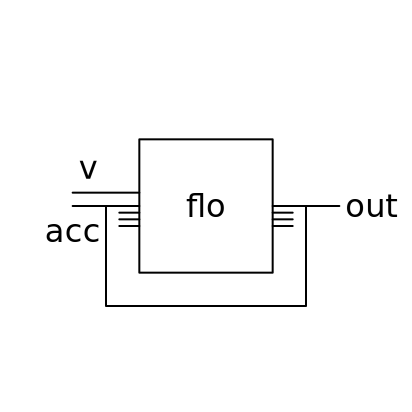

5 The Qi Language
The core syntax of the Qi language. These forms may be used in any flow. Flows may be specified in Racket via the language interface.
5.1 Basic
syntax
Note that literals are transparently wrapped with gen during expansion and don’t need to be explicitly wrapped.
gen generalizes const in the same way that values generalizes identity.
Also see Using Racket Values in Qi Flows.
> ((☯ (gen 1)) 3) 1
> ((☯ (gen (string-append "hello" " " "there"))) 3 4 5) "hello there"
> ((☯ (gen 1 2)) 3) 1
2
When used in parametrized form with a presupplied flo, this flow accepts any number of inputs, where the first is expected to be the list to be unraveled. In this form, the flow separates the list into its component values and passes each through flo along with the remaining input values.
△ and ▽ often allow you to use functions directly where you might otherwise need to use an indirection like apply or list.
> ((☯ (~> △ +)) (list 1 2 3 4)) 10
> ((☯ (~> △ (>< sqr) ▽)) (list 1 2 3 4)) '(1 4 9 16)
> ((☯ (~> (△ +) ▽)) (list 1 2 3) 10) '(11 12 13)
> (struct kitten (name age) #:transparent)
> ((☯ (~> (△ kitten) ▽)) (list "Ferdinand" "Imp" "Zacky") 0) (list (kitten "Ferdinand" 0) (kitten "Imp" 0) (kitten "Zacky" 0))
△ and ▽ often allow you to use functions directly where you might otherwise need to use an indirection like apply or list.
> ((☯ (~> ▽ (string-join ""))) "a" "b" "c") "abc"
> ((☯ (~> △ (>< sqr) ▽)) (list 1 2 3 4)) '(1 4 9 16)
Also see Using Racket to Define Flows.
We typically describe flows using Qi, while esc allows us to describe a flow using the host language. In either case, the flow simply operates on runtime inputs. In some cases, though, we need to generate a flow as a value to be used later, for instance, when the flow is parametrized by inputs not available until runtime. clos allows us to define and produce such a flow using Qi.
Without clos, we could still accomplish this by using esc and producing a function value (i.e. a lambda) as the result of the function we define – but this would mean that we must employ the host language to describe the flow rather than Qi.
When used within a threading form (i.e. ~> or ~>>), clos incorporates the pre-supplied input in accordance with the threading direction at the site of its definition.
See Converting a Function to a Closure in the field guide for more tips on using closures.
> ((☯ (~> (-< (~> first (clos *)) rest) map)) (list 5 4 3 2 1)) '(20 15 10 5)
> (~> ("a" (list "b" "c" "d")) (== (clos string-append) _) map) '("ab" "ac" "ad")
> (~> ("a" (list "b" "c" "d")) (== (~>> (clos string-append)) _) map) '("ba" "ca" "da")
5.2 Predicates
> ((☯ (one-of? 'a 'b 'c)) 'b) #t
syntax
(any flo)
syntax
(and flo ...)
syntax
(or flo ...)
syntax
(not flo)
5.3 Boolean Algebra
> ((☯ NOT) #t) #f
> ((☯ NOT) #f) #t
> ((☯ AND) #t #t #t) #t
> ((☯ AND) #t #f #t) #f
Note that the symbol form uses Unicode 0x2225 corresponding to LaTeX’s \parallel. We do not use the easier-to-type || symbol (that was formerly used here in older versions of Qi) as that is treated as the empty symbol by Racket’s reader, which could cause problems in some cases.
> ((☯ OR) #t #f #t) #t
> ((☯ OR) #f #f #f) #f
> ((☯ any?) #t #f #t) #t
> ((☯ any?) #f #f #f) #f
> ((☯ all?) #t #t #t) #t
> ((☯ all?) #t #f #t) #f
> ((☯ none?) #f #t #f) #f
> ((☯ none?) #f #f #f) #t
> ((☯ inverter) #f #t #f) #t
#f
#t
5.4 Routing
> ((☯ ⏚) 1 2 3)
syntax
(~> flo ...)
syntax
(~>> flo ...)
~> "threads" the arguments in the leading position, while ~>> threads them in the trailing position. Argument positions may also be explicitly indicated via a template, either individually or en masse.
> ((☯ (~> + sqr)) 1 2 3) 36
> ((☯ (~>> (string-append "a" "b"))) "c" "d") "abcd"
> ((☯ X) 1 2 3) 3
2
1
> ((☯ (~> X string-append)) "a" "b" "c") "cba"
In the common case of 1 × 1 flos (i.e. where the flows each accept one input and produce one output), the number of outputs will be the same as the number of inputs, but as flows can be nonlinear, this is not necessarily the case in general.
When used in identifier form simply as ==, it behaves identically to ><.
See also the field guide entry on the relationship between bindings and nonlinearity.
When used in identifier form simply as fanout, it treats the first input as N, and the remaining inputs as the values to be fanned out.
> ((☯ (fanout 3)) 5) 5
5
5
> ((☯ (fanout 2)) 3 7) 3
7
3
7
> (~> (3 "hello?") fanout) "hello?"
"hello?"
"hello?"
> ((☯ 4>) 'a 'b 'c 'd 'e 'f) 'd
> ((☯ (select 1 4)) 'a 'b 'c 'd 'e 'f) 'a
'd
> ((☯ (block 1 2 4 6)) 'a 'b 'c 'd 'e 'f) 'c
'e
In the context of a loop, this is a typical way to do "structural recursion" on flows (see "pare"), and in this respect it is the values analogue to car and cdr for lists.
When used in identifier form simply as group, it treats the first three inputs as number, selection-flo and remainder-flo, respectively, and the remaining as the data inputs to be acted upon.
When used in identifier form simply as sieve, it treats the first three inputs as condition-flo, selection-flo and remainder-flo, respectively, and the remaining as the data inputs to be acted upon.
syntax
(partition [condition-flo body-flo] ...)
> ((☯ (partition))) > ((☯ (partition [positive? max])) 1 -2 3 -4 5) 5
> ((☯ (partition [positive? max] [negative? min])) 1 -2 3 -4 5) 5
-4
> ((☯ (partition [positive? max] [negative? min])) 1 -2 3 -4 5) 5
-4
> ((☯ (partition [positive? max] [zero? (-< count (gen "zero"))] [negative? min])) 1 -2 3 -4 5) 5
0
"zero"
-4
> ((☯ (partition [(and positive? (> 1)) max])) 1 -2 3 -4 5) 5
5.5 Conditionals
syntax
(if condition-flo consequent-flo alternative-flo)
syntax
(when condition-flo consequent-flo)
syntax
(unless condition-flo alternative-flo)
when is shorthand for (if condition-flo consequent-flo ⏚) and unless is shorthand for (if condition-flo ⏚ alternative-flo).
> ((☯ (if positive? add1 sub1)) 3) 4
> ((☯ (when positive? add1)) 3) 4
> ((☯ (unless positive? add1)) 3)
syntax
(switch maybe-divert-expr switch-expr ...)
maybe-divert-expr = (divert condition-gate-flow consequent-gate-flow) | (% condition-gate-flow consequent-gate-flow) switch-expr = [flow-expr flow-expr] | [flow-expr (=> flow-expr)] | [else flow-expr]
Typically, each of the component flows – conditions and consequents both – receives all of the original inputs to the switch. This can be changed by using a divert clause, which takes two flow arguments, the first of whose outputs go to all of the condition flows, and the second of whose outputs go to all of the consequent flows. This can be useful in cases where multiple values flow, but only some of them are predicated upon, and others (or all of them) inform the actions to be taken. Using (divert _ _) is equivalent to not using it. % is a symbolic alias for divert – parse it visually not as the percentage sign, but as a convenient way to depict a "floodgate" diverting values down different channels.
When the => form is used in a consequent flow, the consequent receives N + 1 inputs, where the first input is the result of the predicate flow, and the remaining N inputs are the a priori inputs to the consequent flow (which are typically the original inputs to the switch, unless modulated with a divert clause). This form is analogous to the => symbol when used in a cond. Note that while switch can direct any number of values, we can unambiguously channel the result of the predicate to the first input of the consequent here because it is guaranteed to be a single value (otherwise it wouldn’t be a predicate).
If none of the conditions are met, this flow produces the input values, unchanged, except if a divert clause is specified, in which case it produces the input values transformed under consequent-gate-flow. If you need a specific value such as (void) or would prefer to output no values, indicate this explicitly via e.g. [else void] or [else ⏚].
> ((☯ (switch [positive? add1] [else sub1])) 3) 4
> ((☯ (switch [(member (list 1 2 3)) (=> 1> (map - _))] [else 'not-found])) 2) '(-2 -3)
> ((☯ (switch (% 1> _) [number? cons] [list? append] [else 2>])) (list 3) (list 1 2)) '(3 1 2)
5.6 Loops
syntax
syntax
(loop condition-flo map-flo combine-flo)
syntax
(loop condition-flo map-flo)
syntax
(loop map-flo)
syntax
loop
If unspecified, condition-flo defaults to #t, combine-flo defaults to _, and return-flo defaults to ⏚.
When used in identifier form simply as loop, this behaves the same as the fully qualified version, except that the flows parametrizing the loop are expected as the initial four inputs (in the same order), and the data inputs being acted upon are expected to follow.
syntax
syntax
(feedback flo)
syntax
(feedback N flo)
syntax
(feedback N (then then-flo))
syntax
(feedback N (then then-flo) flo)
syntax
(feedback (while cond-flo))
syntax
(feedback (while cond-flo) flo)
syntax
(feedback (while cond-flo) (then then-flo))
syntax
(feedback (while cond-flo) (then then-flo) flo)
If used as (feedback flo), the first input to the feedback block will be expected to be N and will not be "fed back" with the rest of the inputs. If flo is not specified, then it will be expected as the first input, with the remaining inputs being treated as the inputs being acted upon. If used in identifier form simply as feedback, it treats the first two inputs as N and flo, respectively, and both are expected. The remaining inputs are treated as the data inputs being acted upon.
For practical advice on using feedback, see Effectively Using Feedback Loops in the field guide.
5.7 Exceptions
> (~> (9) (try (/ 3) [exn:fail? 0]) add1) 4
> (~> (9) (try (/ 0) [exn:fail:contract:arity? 0] [exn:fail:contract:divide-by-zero? _]) add1) 10
5.8 Higher-order Flows
If used in identifier form simply as ><, it treats the first input as flo.
If used in identifier form simply as pass, it treats the first input as condition-flo and the remaining inputs as the values to be filtered.
flo processes one input value at a time. It receives the current input value in the first position, followed by the accumulated values, and may generate any number of output values. These output values are fed back as accumulated values for the next iteration if input values remain to be processed; otherwise, they are produced as the output of the flow.

init-flo is expected to be a flow that will generate the initial values for the fold, and will be invoked with no inputs for this purpose at runtime. It is done this way to support having multiple initial values or no initial values, rather than specifically one. Specifying init-flo is optional; if it isn’t provided, flo itself is invoked with no arguments to obtain the init value, to borrow a convention from the Clojure language.
> ((☯ (<< +)) 1 2 3 4) 10
> ((☯ (<< string-append)) "a" "b" "c" "d") "abcd"
> ((☯ (>> string-append)) "a" "b" "c" "d") "dcba"
> ((☯ (<< string-append "☯")) "a" "b" "c" "d") "abcd☯"
> ((☯ (<< cons '())) 1 2 3 4) '(1 2 3 4)
> ((☯ (<< + (gen 2 3))) 1 2 3 4) 15
> ((☯ (>> (-< (block 1) (~> 1> (fanout 2))) ⏚)) 1 2 3) 1
1
2
2
3
3
syntax
syntax
(ε side-effect-flo)
syntax
syntax
(effect side-effect-flo)
Use (ε side-effect-flo) to just perform a side effect without modifying the input, equivalent to (-< (~> side-effect-flo ⏚) _).
Remember that, as the side-effect flow is based on a tee junction, it must handle as many inputs as the main flow. For instance, if you were to use displayln as the side-effect, it wouldn’t work if more than one value were flowing, and you’d get an inscrutable error resembling:
; displayln: contract violation ; expected: output-port? ; given: 1 ; argument position: 2nd ; other arguments...: ; 1
As displayln expects a single input, you’d need to use (>< displayln) for this side-effect in general.
If you are interested in using effect to debug a flow, see the section on Debugging in the field guide for more strategies.
syntax
5.9 Binding
> ((☯ (~> (-< (~> list (as vs)) +) (~a "The sum of " vs " is " _))) 1 2) "The sum of (1 2) is 3"
> ((☯ (~> (-< + count) (as total number) (/ total number))) 1 2 3 4 5) 3
5.9.1 Variable Scope
We will use (gen v) as an example of a flow referencing a binding, to illustrate variable scope.
In general, bindings are scoped to the outermost threading form, and may be referenced downstream.
> (~> (5) (as v) (gen v)) 5
> (~> (5) (-< (~> sqr (as v)) _) (gen v)) 25
A tee junction binds downstream flows in a containing threading form, with later tines shadowing earlier tines.
> (~> () (-< (~> 5 (as v)) (~> 6 (as v))) (gen v)) 6
A relay binds downstream flows in a containing threading form, with later tines shadowing earlier tines.
> (~> (5 6) (== (as v) (as v)) (gen v)) 6
In an if conditional form, variables bound in the condition bind the consequent and alternative flows, and do not bind downstream flows.
> (on ("Ferdinand") (if (-< (~> string-titlecase (as name)) (string-suffix? "cat")) (gen name) (gen (~a name " the Cat")))) "Ferdinand the Cat"
Analogously, in a switch, variables bound in each condition bind the corresponding consequent flow.
> (switch ("Ferdinand the cat") [(-< (~> string-titlecase (as name)) (string-suffix? "cat")) (gen name)] [else "dog"]) "Ferdinand The Cat"
As switch compiles to if, technically, earlier conditions bind all later switch clauses (and are shadowed by them), but this is considered an incidental implementation detail. Like if, switch bindings are unavailable downstream.
5.10 Identifiers
Identifiers in a flow context are interpreted as variables whose values are expected to be functions. In other words, any named function may be used directly as a flow.
More precisely, for instance, add1 in a flow context is equivalent to (esc add1).
5.11 Literals
Literals and quoted values (including syntax-quoted values) in a flow context are interpreted as flows generating them. That is, for instance, 5 in a flow context is equivalent to (gen 5).
> ((☯ "hello") 1 2 3) "hello"
5.12 Templates and Partial Application
A parenthesized expression that isn’t one of the Qi forms is treated as partial function application, where the syntactically-indicated arguments are pre-supplied to yield a partially applied function that is applied to the input values at runtime.
Usually, the _ symbol indicates the trivial or identity flow, simply passing the inputs through unchanged. Within a partial application, however, the underscore indicates argument positions. If the expression includes a double underscore, __, then it is treated as a blanket template such that the runtime arguments (however many there may be) are passed starting at the position indicated by the placeholder. Another type of template is indicated by using one or more single underscores. In this case, a specific number of runtime arguments are expected (corresponding to the number of blanks indicated by underscores). Note that this could even include the function to be applied, if that position is templatized. This more fine-grained template is powered under the hood by Fancy App: Scala-Style Magic Lambdas.
> ((☯ (* 3)) 7) 21
> ((☯ (string-append "c")) "a" "b") "abc"
> ((☯ (string-append "a" _ "c")) "b") "abc"
> ((☯ (< 5 _ 10)) 7) #t
> ((☯ (< 5 _ 7 _ 10)) 6 9) #t
> ((☯ (< 5 _ 7 _ 10)) 6 11) #f
> ((☯ (~> (clos *) (_ 3))) 10) 30
> ((☯ (< 5 __ 10)) 6 7 8) #t
> ((☯ (< 5 __ 10)) 6 7 11) #f
5.13 Utilities
syntax
> ((☯ live?) 5) #t
> (~> (5) (-< _ _ _) live?) #t
> (~> (5) (-< _ _ _) ⏚ live?) #f
> (~> (8 "hello" 3 'boo 4) (pass number?) (if live? min #f)) 3
> (~> ("hello" 'boo) (pass number?) (if live? min #f)) #f
A flow may sometimes produce no values. In such cases, depending on how the output of the flow is used, it may be desirable to ensure that it returns some default value or values instead. rectify produces the original output of the flow unchanged if there is any output, and otherwise outputs v ....
> (~> (5) (rectify #f)) 5
> (~> (5) ⏚ (rectify #f)) #f
> (~> (8 "hello" 3 'boo 4) (pass number?) (rectify 0) min) 3
> (~> ("hello" 'boo) (pass number?) (rectify 0) min) 0
5.14 Language Extension
This way to extend the language is intended for use in legacy versions of Racket only, that is, versions 8.2 or earlier. Qi now (as of Racket 8.3) offers "first class" macro extensibility where there is no need for the special prefix, "qi:". See Qi Macros for more. Prefix-based macros (i.e. the kind discussed in the present section) should be considered deprecated on versions 8.3 or later.
This allows you to extend the Qi language locally without requiring changes to be made in the library itself.
> (define-syntax-rule (qi:square flo) (☯ (feedback 2 flo))) > (~> (2 3) + (qi:square sqr)) 625